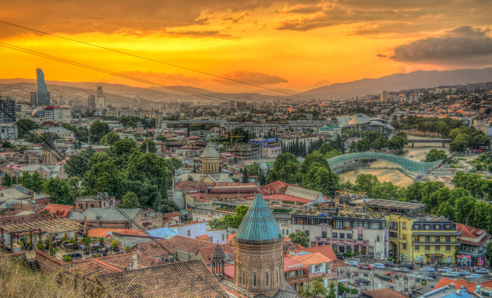
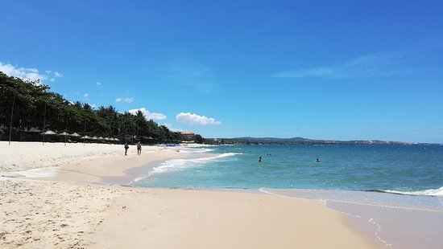

Топ 5 стран для туризма от нас
Норвегия – страна фьордов и троллей
Мало кто не слышал о Норвегии с ее совершенно особенной культурой. Это страна, где встречается реальность и сказка – граждане Норвегии со всей убежденностью верят в троллей и знают, что даже в самой обыденной обстановке найдется место чуду. Наверняка, вы сами немало слышали о Норвегии – о стране фьордов и викингов, где из смеси воды во всех ее агрегатных состояниях, скал, зелени и совершенно особенной атмосферы вырисовывается удивительный мир, который притягивает к себе своей необычностью. Фьорды и паромы – большая составляющая наиболее популярных экскурсий. Сюда ездят, чтобы посмотреть на скалы с воды, проплыть по всем фьордам, побывать на Лофотенских островах, узнать побольше о суровом быте викингов и заняться рыбалкой.

Мы же смотрим на Норвегию с другой стороны. Активный отдых с нами – это треккинги, экскурсии по нехоженым местам и новые места, которые не похожи ни на что другое. Скала Проповедника, Горошина, Язык Тролля, ледник Фолгефонна, гора Галхепигген, тропа Бессеген – все это мы видим своими глазами и познаем саму душу Норвегии!
Гостеприимная Грузия и тайны древностей

Еще одно важное место в наших поездках занимает Грузия – страна, которая славится своим невероятным гостеприимством и самобытной культурой. Грузия – это не только страна пляжного отдыха. Конечно, Батуми, Уреки и Кобулети нельзя вычеркивать из списка городов, обязательных к посещению, но для тех, кто хочет в полной мере ознакомиться с достопримечательностями страны, вникнуть в устои жизни, оценить всю красоту природы и прикоснуться к тайнам одной из самых древних национальностей – этого мало.

Поездки клуба активного отдыха в Грузию имеют большую экскурсионную составляющую. Мы не только едем в Грузию для того, чтобы попробовать местную кухню и насладиться винными дегустациями, но и для того, чтобы прикоснуться к тайнам этой страны с широкой душой. Пещеры и пещерные города, монастыри, крепости, каньоны, водопады – это лишь малая часть того, что мы посещаем в наших поездках по Грузии. Мы узнаем об архитектурных особенностях популярных ансамблей и уделяем немало времени отдыху – активному и не очень.
Исландия, страна льда и пламени
Исландия имеет свои секреты и неизменно будоражит воображение. «Страна, расположенная на другой планете» - так ее иногда называют. И попадая туда, мы каждый раз убеждаемся, что это так.
Приезжая в Исландию, мы каждый раз поражаемся ее величественной красоте. Вулканы Эйяфьятлайокудль, Крапла, Гримсветн, гейзеры Гельсир и Строккур, водопады Гульфосс и Скоугафосс являются визитной карточкой Исландии, и в каждой нашей поездке мы не можем позволить себе пропустить их посещение. И хоть команда нашего клуба активных путешествий неоднократно бывала в самых интересных местах Исландии, мы каждый раз снова и снова удивляемся той внутренней мощи, которая спит в недрах земли страны огня и льда. Если вы еще не были в Исландии – не откладывайте! Эта страна просто обязательна к посещению! Must see!
Горнолыжные курорты Финляндии
В наш ТОП-5 стран входит и Финляндия. Многие ездят сюда просто так – сходить по магазинам, открыть шенгенскую визу, погулять по паркам и улочкам пограничных городов. Но мало кто задумывается об этой стране, как об идеальном месте для семейного активного отдыха. А ведь именно здесь располагаются два самых уютных горнолыжных курорта, уже несколько лет как совмещенных в один – Уккохалла и Пальякка. А ведь еще есть Юлляс – для тех, кто любит трассы посложнее и побольше, кто ценит огромные снежные просторы и готов любоваться нетронутой природой, совмещая физические нагрузки с ценными минутами отдыха.
Почему эти курорты прекрасно подходят для семей? Да потому, что здесь масса горнолыжных и беговых трасс самой различной сложности, а даже самому маленькому туристу-лыжнику будет интересно прокатиться и посмотреть на просторы, закованные в снега. Кроме того, в активных поездках в Финляндию мы останавливаемся в комфортабельных коттеджах и ни в чем себе не отказываем.
Активный Вьетнам
Сейчас Вьетнам – одно из самых популярных направлений. Пляжный отдых здесь восхитителен, а активная составляющая ярка как нигде более. Именно сюда любит ездить молодежь – здесь интересно, весело, просторно и не слишком дорого.

И конечно, наш клуб активного отдыха с удовольствием ездит во Вьетнам – там мы катаемся на корабликах по бухте Ха Лонг, ходим в треккинги по невысоким, но очень живописным горам, наслаждаемся пляжами Муйне – занимаемся кайтингом, серфингом и виндсерфингом практически без сна, отдыха и перерыва на обед!